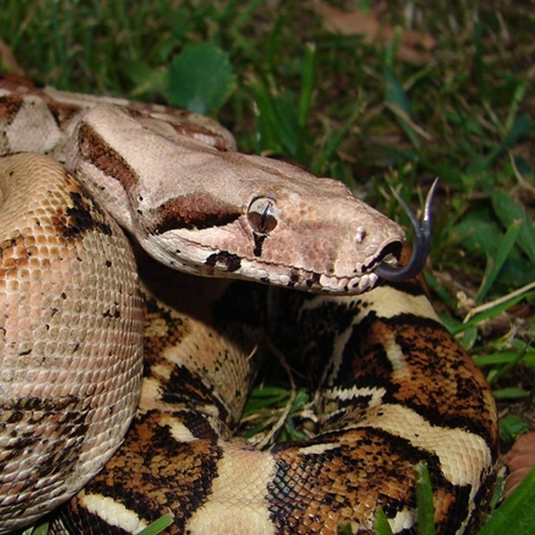
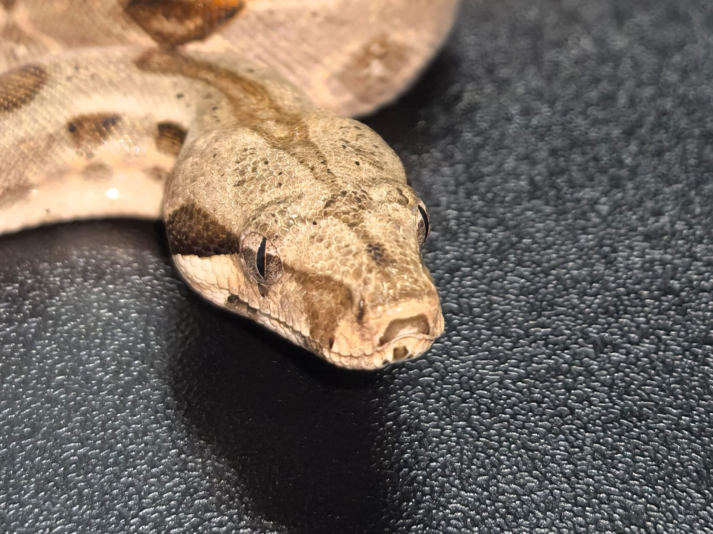
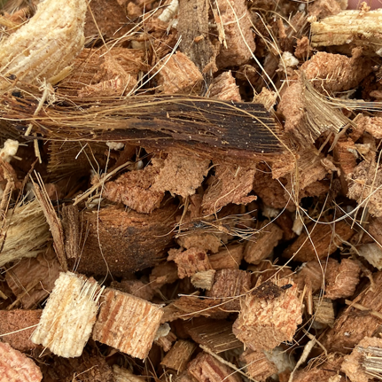
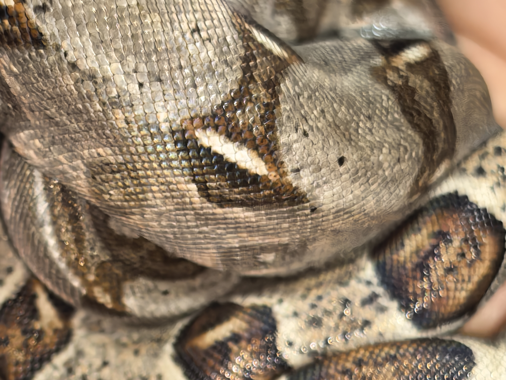
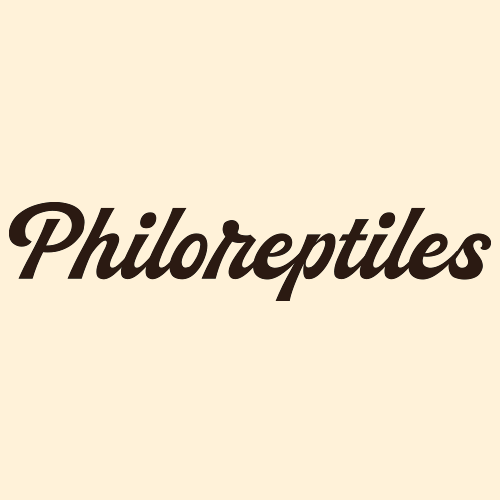
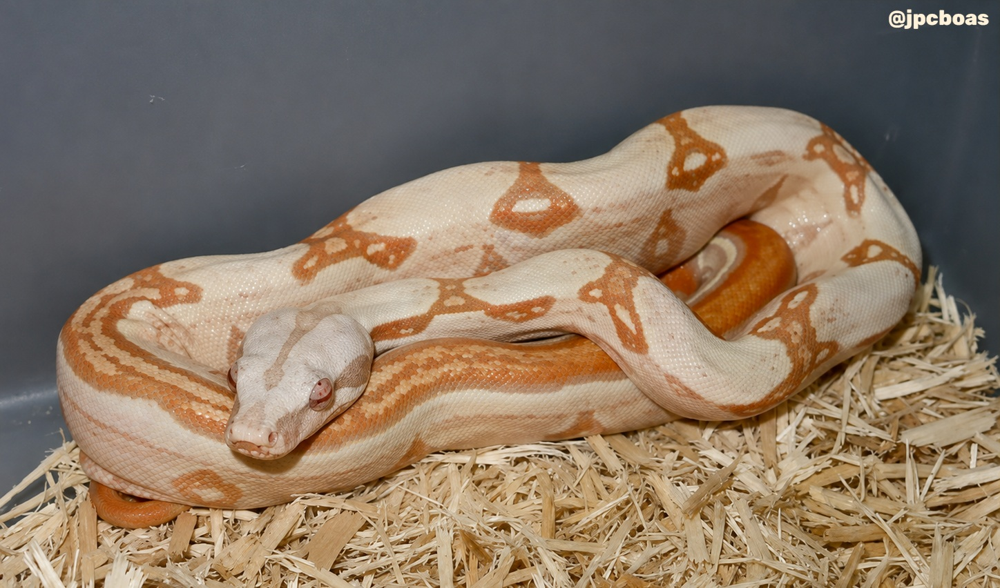

BiologíaTaxonomía
Clasificación y distribución
Diferencias entre especies, subespecies y variaciones morfológicas por región geográfica.
Explorar taxonomíaPhiloreptiles es un espacio dedicado a la divulgación y el aprendizaje continuo en el mundo de las boas. Compartimos experiencias, observaciones y conocimientos para promover una herpetocultura responsable.

Accede directamente a nuestras secciones especializadas sobre sistemática, parámetros de mantenimiento y herencia genética.

BiologíaClasificación y distribución
Diferencias entre especies, subespecies y variaciones morfológicas por región geográfica.
Explorar taxonomía
ManutenciónParámetros y bienestar
Guías sobre temperatura, humedad, recintos y mantenimiento responsable.
Explorar cuidados
HerpetoculturaHerencia y mutaciones
Principios genéticos, genes dominantes, recesivos y combinaciones populares en cautiverio.
Explorar genéticaNuevos artículos, notas sobre herpetocultura, observaciones e investigaciones del proyecto.

ReflexiónEste espacio nace de algo bastante sencillo: nuestro interés por las boas y las ganas de compartir todo aquello que hemos aprendido —y seguimos aprendiendo— sobre ellas.
Leer artículo →
NoticiasDurante casi dos décadas, los criadores de boas se han enfrentado a un rompecabezas genético que no encajaba en ninguna de las reglas conocidas.
Leer artículo →